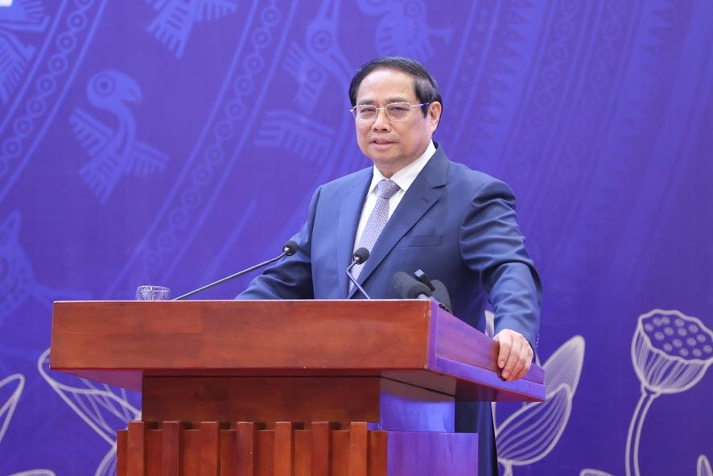

Điều hướng SVVN - 'Giáo dục có vai trò quan trọng và là một trong ba đột phá phát triển đất nước', Thủ tướng
Phạm Minh Chính nhấn mạnh tại Hội nghị Tổng kết năm học 2023 - 2024 và triển khai nhiệm vụ năm học mới 2024 - 2025, do Bộ GD - ĐT tố chức sáng 19/8.
Khẳng định, những năm qua, Đảng. Nhà nước luôn coi giáo dục là quốc sách hàng đầu, Thủ tưởng Phạm Minh Chính nhấn mạnh, 10 điểm sáng của giáo dục trong năm học 2024 - 2025: Thứ nhất, nghành Giáo dục đã Tổng kết 10 năm thực hiện Nghị quyết 29; trên cơ sở đó, góp phần tham mưu để Bộ Chính trị ban hành Kết luận 91 để tiếp tục thực hiện Nghị quyết số 29. Thứ hai, ngành Giáo dục tiếp tục hoàn thiện thể chế chính sách, phát triển giáo dục; trong đó có việc hoàn thiện hồ sơ xây dựng Luật Nhà giáo. Thứ ba, quy mô giáo dục, mạng lưới giáo dục mầm non, phổ thông, thường xuyên phát triển, đáp ứng nhu cầu học tập của nhân dân và phát triền nguồn nhân lực đất nước.
